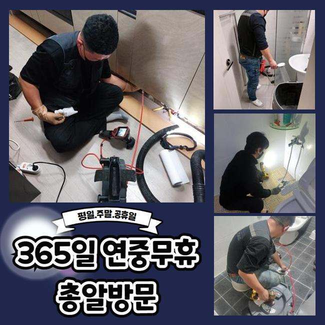
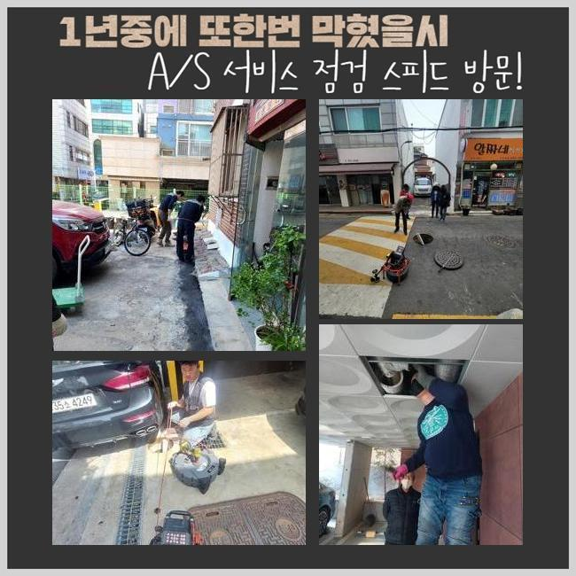
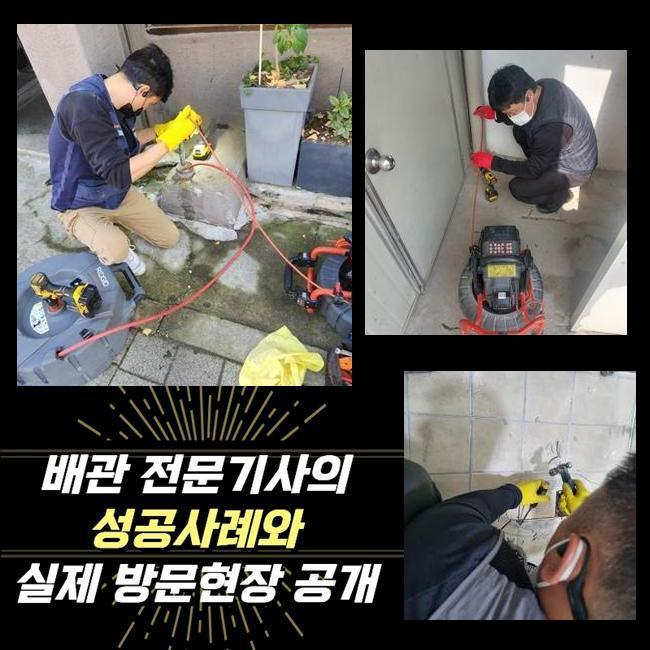
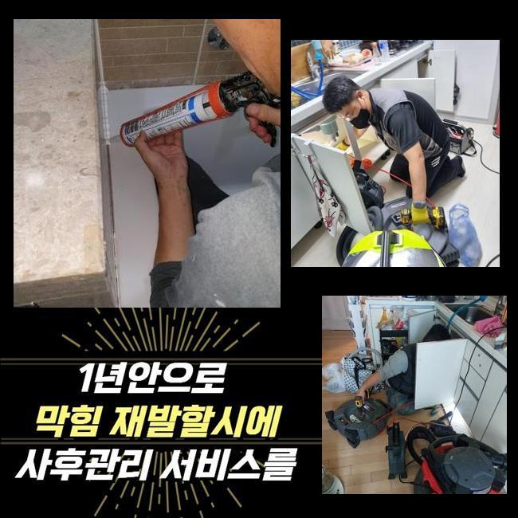
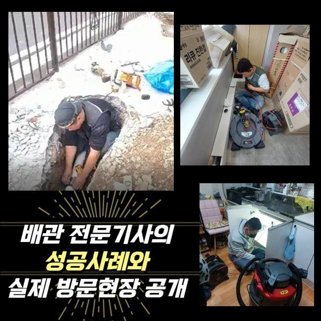
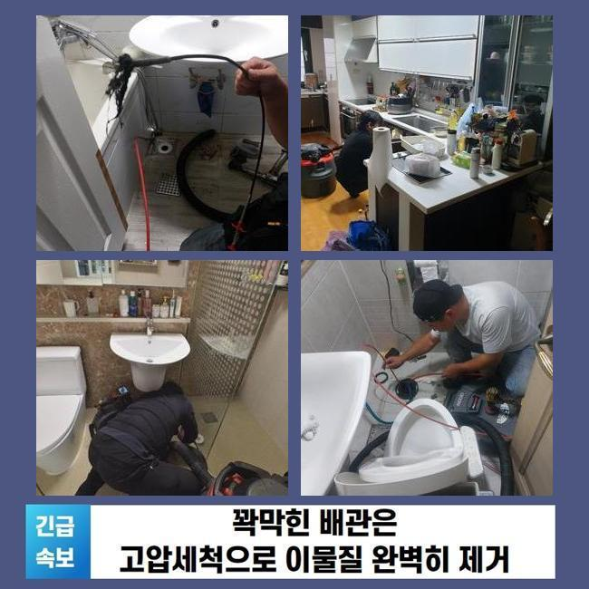
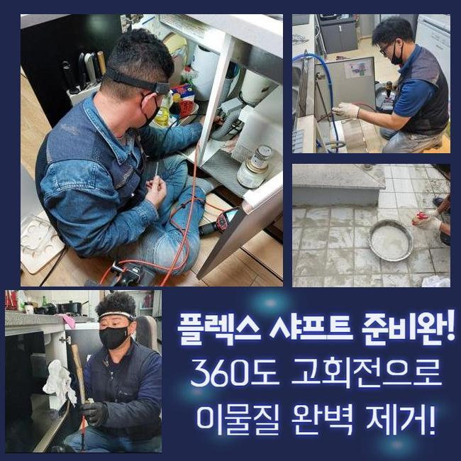

🏠 강서구 마곡동세탁실역류 오쇠동 배수구뚫기 배관설비공사
용인시 처인구 배관막힘 전문 시공 후기

📋 작업 개요
- 위치: 용인시 처인구, 수원시 영통구, 화성시 동탄
- 서비스 유형: 배관막힘, 누수수리, 고압세척, 내시경점검
- 작업 일시:
- 업체명: 하수구수사대 (010-5615-2118)
🔍 문제 상황
강서구 마곡동세탁실역류 오쇠동 배수구뚫기 배관설비공사
여러분들께서 예측하셨던것보다 많은장소에서 배관막힘문제가 발생하고있어요
급작스럽게 막히는경우도있어 당황하시기도해요
배관내부에 잔해물질이 쌓인것을 육안만으로는 확인할수없어 급작스레 막히게된것이라고 인식하시는거에요
역류현상이나 악취증세까지 동반되는경우 일상을영위하기 어렵기에 조속하게 관련된곳으로 의뢰하셔야해요
최근에 내방한곳으로 역류뿐만아니라 다양한현상들이 발현한 상태였어요
욕실이나 주방은 자주 사용하기때문에 빠르게 개선해주는것이 좋겠죠
배관에서 막히는징조가 발현했을때 신속히 관련된기계를 통하여 해결해줄수있는 전문가에게 연락해야해요
하수구가 막히게되었을때 많은사람들이 자가조치를통하여 처리해보시려고 조치를취하시곤 합니다
끓는물로 부어보거나 용액제품을 막힌배관에 투입시켜 처리하려고하시죠
이러한노력을 통해서도 개선되지못하는 요인입니다
되려시간이 지체되서 심각한경우로 연결될수있으므로 심각해지기전에 대응하셔야합니다
장시간 쌓여있던이물은 주변마트에서 살수있는 제품으로 개선하기 어렵기때문이죠

🔎 원인 분석
💡 전문가 진단: 정밀 진단 장비를 사용하여 슬러지의 고착 여부를 판명하고 타격/세척 작업을 실시했습니다.
그렇기에 막힘이발생하면 과하게 손대지않고 요청해주시는것이 좋겠습니다
문의주신장소에서 어떤원인으로 막혔는지 파악해보기로 했답니다
확인해본결과 화장실바닥에서 문제가생긴걸 살펴볼수있었죠
건축된지 오랜시간이지난 아파트시설이었고 점검받은적이 없었다보니 잔해물이 하수도안에 퇴적된것을 고려해보았죠
집구조살핀후 배수구쪽과 세면대쪽에서 물을흘려봤죠
배수상태가 느린상태로 빠져나가고 있었으며 역류현상까지 발현하고있었어요
전체적으로 살펴봤더니 하수구가 막혀있다는걸 발견했습니다
배관막힘발생시 중요한건 해당문제를 방치하지않으셔야 해요
방치하면할수록 하수구에 손상이발생해 누수문제로 불거질확률이 크기 때문이랍니다
약간의크랙이 발생하더라도 심한증상으로 연결되는 하수구이므로 다양한증세로 일어나기전 빠른대처로 이어져야합니다
막히게된 연유가뭔지 파악하기위하여 배관안속에 내시경카메라를 투입시켰어요
내시경기기를 사용하면 두눈으로 살필수없는곳에 발현된증상까지 인지해낼수있어요
배관전체로 오염물질이 쌓여있다는걸 파악해냈답니다

🔧 작업 과정
이물질을 과도하게 분쇄시키려고 하기보단 약물을투입시켜 녹이기로했답니다
굳어진 이물질들을 용액을통하여 연화시키는과정을 선택한것이죠
굳어있는 석회물질을 타격을입혀 제거할경우 하수구가 망가질수도있죠
약물투입후 배수구내부쪽에 샤프트장비를 투입했어요
해당증상이 일어났을때 많이쓰는 기계로는 분쇄장비와 흡입장비죠
분해장비의 기능은 강력한압을 통하여 고착물들을 제거하기용이해요
석션장비의경우 빨아서올려 잔여물을 없애는장비에요
찌꺼기종류에따라 무슨도구를 사용할지 꼼꼼하게 고르는것이 좋답니다
현장상태에따라 사용해야할 기기에 차이점이 생기기에 그런것이죠
이번현장은 샤프트기계로 이물질들을 세밀하게 분해했어요
연화되어있었기에 전과다르게 문제없이 세척과정에 착수할수있었어요
잔여물의경우 흡입장비를 활용하여 흡입하기로했죠
잔해물이 제거가되며 신속하게 통수되는걸 살필수있었어요
깨끗히 소거시키려고 반복하며 세척과정을 이뤘습니다
배수관내에 이물이 쌓여진 상태였기에 작업이 마치기까지 오래걸렸죠
늦게의뢰를 맡기셨다면 2차문제로 이어지게되어 대공사로 연결될 가능성도 높았습니다
다양한작업을 진행하게되면 생각하지못한 경우가 종종 생기기도합니다
이런상황에도 확실히조치하여 원인제거를 하고있으니 작업이요구되는 상태라면 업체호출시 요소를 잘 따져보세요!
반복과정이 끝난뒤 깨끗히 청소가되었는지 확인하고자 하수구카메라를 활용하였죠
깊은부분까지 섬세히 조사해본결과 깔끔해졌다는걸 살펴볼수있었어요
내부쪽에 슬러지들이 투입되지않게 방지하려면 촘촘하게 되어있는 하수구망을 설치해주시길 바랍니다


✅ 작업 완료
주기로 배관청소를 받아보시는게 도움될겁니다
점진적으로 슬러지들이 쌓이면서 발생하는만큼 상시점검으로 배관막힘이 발생하지않게 신경을써야해요
해결이되었는지 알아보고자 물빠짐이 원활히 진행되는지 살펴봤어요
물이빠지는게 확실하게 빠져나가는것을 보았습니다
이상증세를 모두처리하니 원상태의 배관으로 되돌려놓을수가 있었습니다
방임하지마시고 신속하게 하수구관리를 받아보시는게 좋은방법이니 언제든 찾아주세요




⚠️ 하수구 배관 막힘 예방 및 관리 가이드
- ✅ 머리카락, 비닐, 물티슈 등 물에 분해되지 않는 이물질은 절대 흘려보내지 마세요.
- ✅ 기름기 많은 식기는 설거지 전 키친타올로 먼저 기름때를 닦아내세요.
- ✅ 주기적으로 배수구에 뜨거운 물을 가득 부어주어 유지방 고착을 방지하세요.
- ✅ 작업 후 1년 이내 재발 시 무상 A/S 보증 서비스를 제공합니다.
💡 핵심 정리
- 확실한 장비 작업(내시경 점검 및 샤프트 스케일링)으로 원인을 뿌리 뽑습니다.
- 작업 후 1년 이내에 동일한 부위 재발 시 100% 무상 A/S 서비스를 보장합니다.
- 서울 · 경기 · 인천 전 지역에 24시간 언제든 긴급 출동할 수 있도록 항시 대기 중입니다.
❓ 자주 묻는 질문 (FAQ)
🚨 용인시 처인구 배관막힘 문제로 고민이신가요?
정확한 원인 진단과 확실한 시공으로 재발 없는 해결을 약속드립니다.
24시간 긴급 출동 | 서울 · 경기 · 인천 전지역 | 1년 내 재발 시 무상 A/S